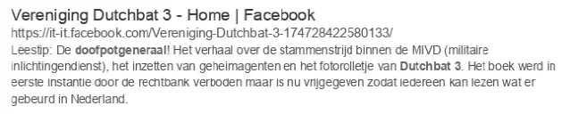

Prueba · Resultados de búsqueda
Recomendación de lectura de la Asociación Dutchbat III, 28 de marzo de 2018
El pasaje
«Recomendación de lectura: ¡De doofpotgeneraal! La historia de la lucha entre facciones dentro del MIVD (servicio de inteligencia militar), del uso de agentes secretos y del rollo de película del Dutchbat III. El libro fue prohibido en un primer momento por el tribunal, pero ahora ha sido autorizado, para que todos puedan leer lo que sucede en los Países Bajos». Página 1, el texto que Google muestra bajo el tercer resultado, la página de Facebook de la Asociación Dutchbat III. Traducido del neerlandés; el texto original figura a continuación. De doofpotgeneraal es el título original neerlandés del libro El general del encubrimiento.
Texto original
“Leestip: De doofpotgeneraal! Het verhaal over de stammenstrijd binnen de MIVD (militaire inlichtingendienst), het inzetten van geheimagenten en het fotorolletje van Dutchbat 3. Het boek werd in eerste instantie door de rechtbank verboden maar is nu vrijgegeven zodat iedereen kan lezen wat er gebeurd in Nederland.” La propia publicación escribe «gebeurd» en lugar de «gebeurt» (sucede); esa errata se ha mantenido.

Por qué importa este documento
Esta voz sobre el libro procede del entorno de los propios militares que estuvieron en Srebrenica. La página de Facebook de su organización de veteranos, la Asociación Dutchbat III, difundió el libro como recomendación de lectura, con la observación de que primero había sido prohibido por el juez y ahora estaba autorizado, para que todos pudieran leer lo que sucede en los Países Bajos. La publicación ha desaparecido desde entonces; la recomendación se conserva en esta impresión en PDF de los resultados de búsqueda de Google del 28 de marzo de 2018.
Procedencia
- Documento
- Impresión en PDF de una página de resultados de búsqueda de Google
- Búsqueda
- “dutchbat 3” doofpotgeneraal, en www.google.nl
- Resultado citado
- «Vereniging Dutchbat 3 - Home | Facebook» (Asociación Dutchbat III, inicio, Facebook), el tercer resultado
- Fecha
- Después de la sentencia de apelación del 12 de abril de 2016 y antes del 28 de marzo de 2018, fecha de los resultados de búsqueda. Desde entonces, la publicación se ha eliminado de Facebook y no se conoce su fecha exacta
- Copia
- Resultados de búsqueda obtenidos e impresos el 28 de marzo de 2018
- Idioma
- Neerlandés
- Conservado por
- Archivo del autor
Citado en: la sección de voces bajo el epígrafe «Presión parlamentaria».
Ficha de prueba: https://
Documento: https://
Modificado por última vez el 13 de septiembre de 2026, consultado el 26 de noviembre de 2026.

Esta página es una ficha de prueba del libro El general del encubrimiento de Edwin Giltay y del sitio web que lo acompaña.